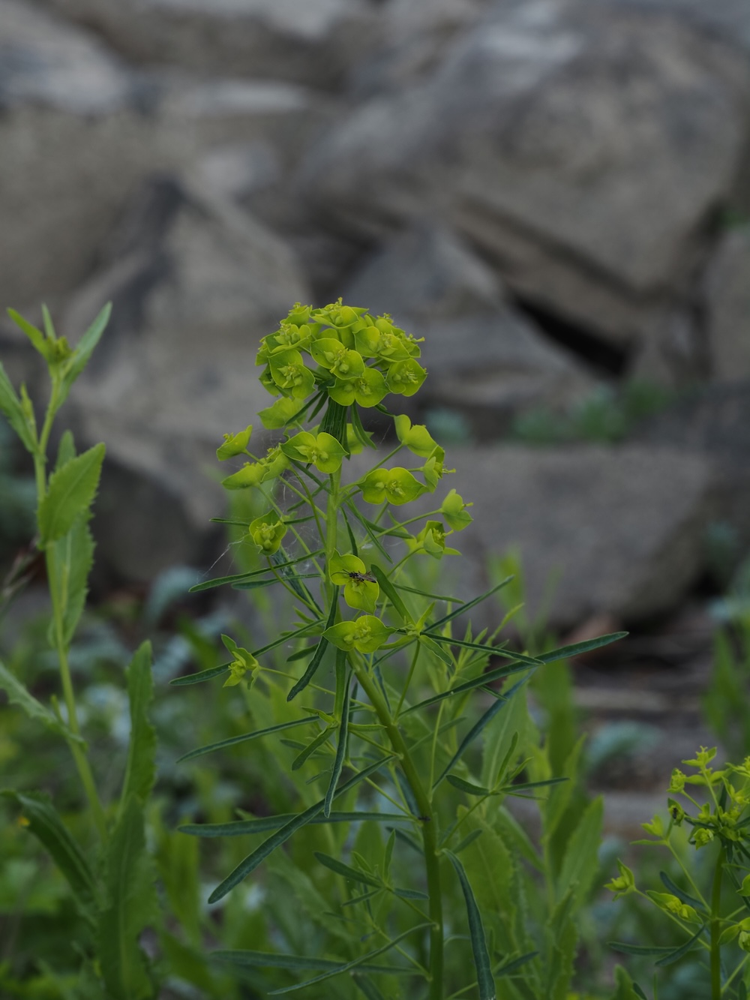
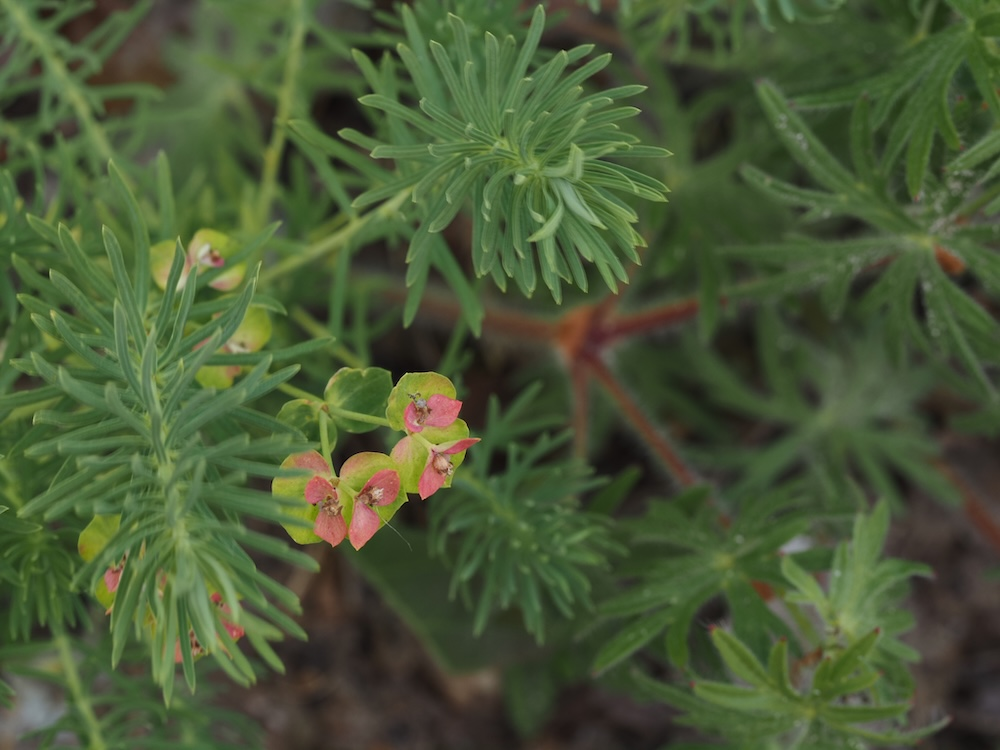
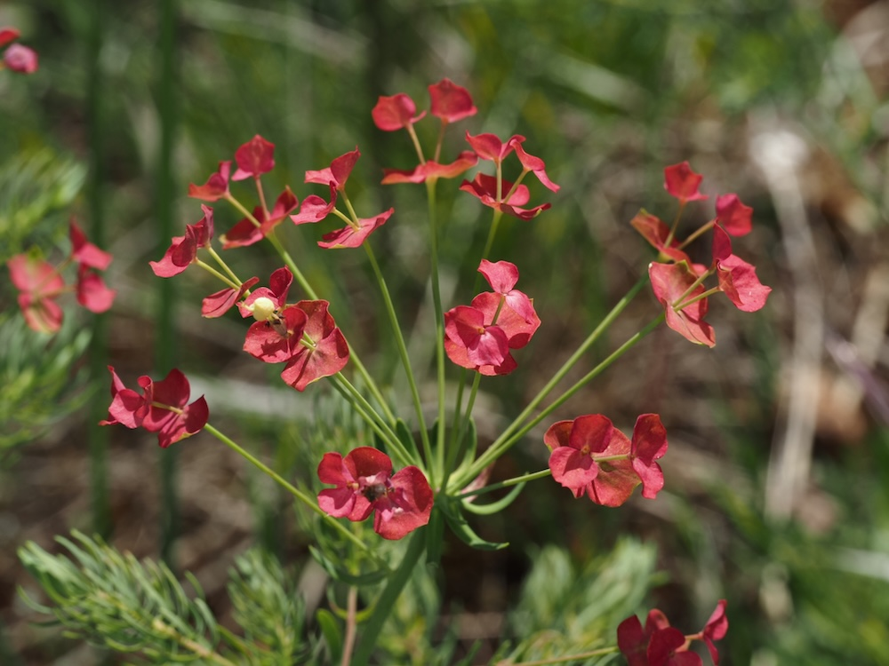

Achtung beim Pflücken
Wer einen Stängel der Wolfsmilch abbricht, erlebt eine weiße Überraschung: milchiger, klebriger Saft tritt heraus. Dieser Saft enthält scharfe Stoffe, die auf der Haut Reizungen und auf der Schleimhaut starkes Brennen verursachen. Beim Augenkontakt: sofort und gründlich auswaschen. Daher: nicht in den Mund stecken, beim Pflücken Handschuhe — und Kinder vorwarnen. „Wolfsmilch“ bedeutet historisch nicht ohne Grund „wilde, gefährliche Milch“.
Eine Pflanze, die wie ein Wald aussieht
Schon der Artname „cyparissias“ (= zypressenartig) verrät: Die feinen, nadelförmigen Blätter ähneln einer Mini-Zypresse oder einem kleinen Tannenbäumchen. Diese Optik ist wahrscheinlich eine Anpassung an heißen, trockenen Standort — schmale Blätter verdunsten weniger Wasser. Im Spätsommer färben sich die Pflanzen oft schön orange-rot, eine wunderbare Spätsommer-Farbe in Magerrasen.